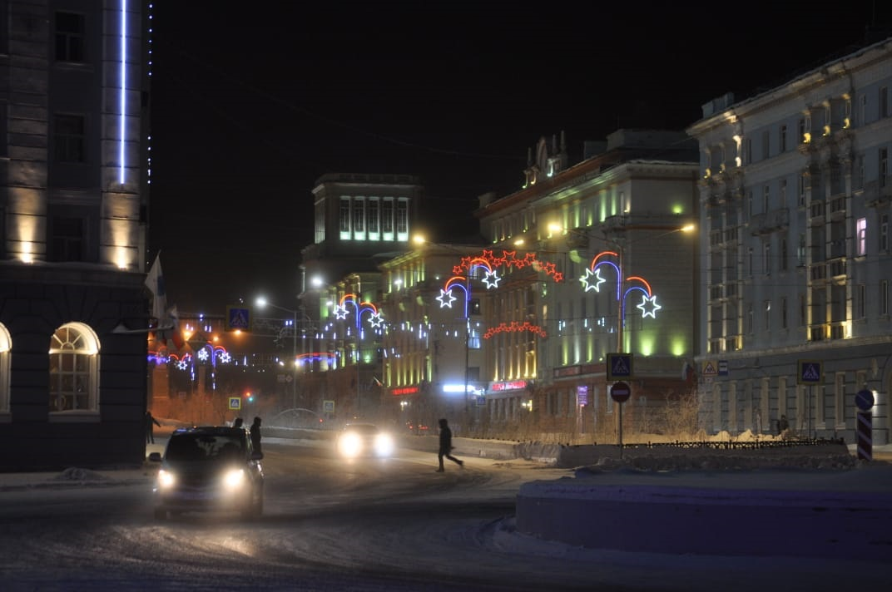

Всем доброго времени суток!
Меня зовут Александр, я живу в одном из самых северных городов нашей Родины, в Норильске

Средняя продолжительность комфортной температуры здесь всего +- 40 дней. В период с ноября по февраль в Норильске наступает полярная ночь,
продолжительность сумерек в дневны часы ~ 2 часа, все остальное время - ночь.

Видео на ютубе "Полярная ночь в Норильске, таймлапс"
В период c мая по конец июля в Норильске наступает полярный день, это означает, что даже в период с 10 вечера по 4 утра в Норильске солнце очень активно и высоко.

Видео на ютубе "Полярный день в Норильске, таймлапс"

Несмотря на отдаленность от остальной части РФ, есть свои плюсы:
- Отпуск 52 дня + возможность взять дорогу + 4 дня = 56 дней
- Оплачиваемая дорога (для работников Норникеля
- Закалка климатом. После здешних температур, даже самые лютые зимы в других регионах нипочем
Хобби: